<!DOCTYPE html>
<html lang="en">
<head>
    <meta charset="UTF-8">
    <meta http-equiv="X-UA-Compatible" content="IE=edge">
    <meta name="viewport" content="width=device-width, initial-scale=1.0">
    <title>BUONGSINHTRUONG</title>
</head>
<body style="font-size: 20px;">
    <h2>Hướng dẫn sử dụng buồng sinh trưởng thực vật</h2>
    <h4>Vận Hành</h4>
    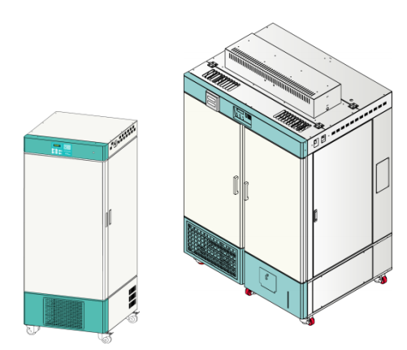 
    <p>Màn hình hiển thị tình trạng hiện tại của buồng 
        khi thiết bị được bật. <br>
        T : Nhiệt độ hiện tại trong buồng <br>
        Co2 : Mật độ CO2 <br>
        H : Độ ẩm hiện tại trong buồng Lux : Cường  <br>
        độ chiếu sáng trong buồng
        Tm : Thời gian còn lại <br>
        SvT : Thời gian cài đặt <br>
        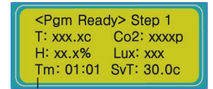 <br>
       <b> Mở đầu </b> <br>
         <br>
        <b>Khởi động chế độ thủ công</b> <br>
        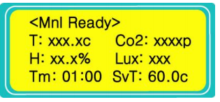 <br>
        <b>Khởi động chế độ thủ công</b> <br>
        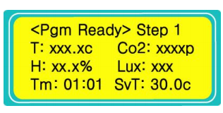 <br>
    </p>
    <h4>1. Bắt đầu điều khiển</h4>
    <p>
        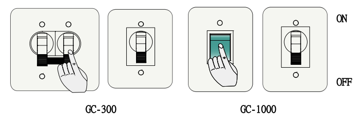 <br>
        1. Bật công tắc Nguồn ở phần trên cùng bên phải của thiết bị. <br>
        2. Bật Công tắc Nguồn sau khi đặt bộ ngắt mạch (Dành cho GC-1000) <br>
    </p>
    <h4>1.1 Thay đổi chế độ điều khiển</h4>
    <p>
        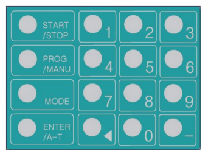 <br>
        Thiết bị hoạt động khi được bật nút Start khi  ở chế độ Chờ điều khiển <br>
        Chế độ PROG / MANU được chuyển đổi bằng cách nhấn nút này trong 5 giây. <br>
    </p>
    <h4>1.2 Biểu thị trên màn hình cho từng chế độ điều khiển.</h4>
    <p>
        Màn hình điều khiển chế độ thủ công <br> 
        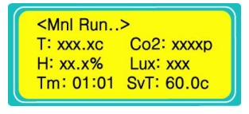 <br>
        Màn hình điều khiển chế độ thiết đặt 
chương trình <br>
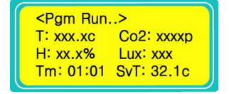 <br>
    </p>
    <h4>2.Vận hành chế độ thủ công</h4>
    <h4>2.1 Cài các thông số ở chế độ thủ công</h4>
    <p>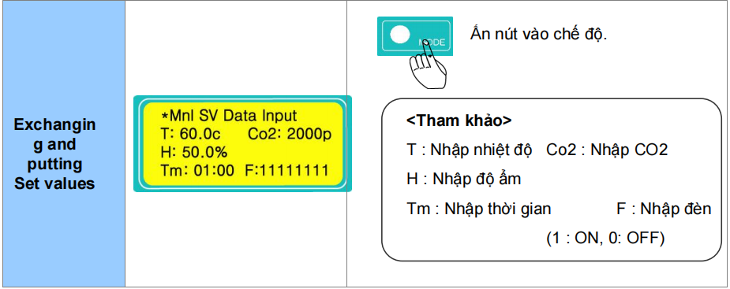 <br></p>
    <h4>2.2 Cài đặt chế độ điều khiển</h4> 
    <p>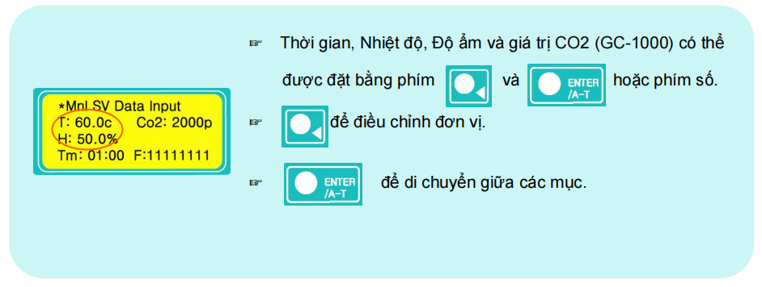 <br></p>
    <h4>2.3 Cài đặt đèn</h4> 
    <p>Các giá trị cài đặt được nhập theo Sơ đồ đèn. <br>
        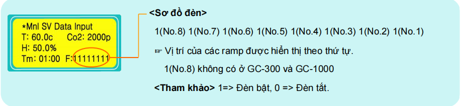 <br>
        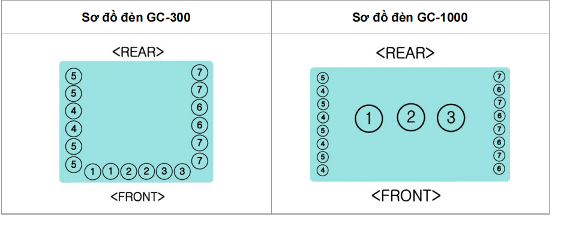 <br>
        Các ví dụ cài đặt đèn (GC-300) <br>
        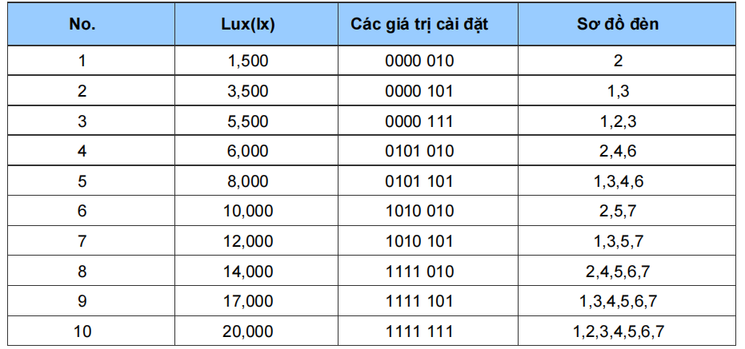 <br>
        Đo độ sáng - Các giá trị được đo từ giữa buồng lên phía mặt trên. <br>
        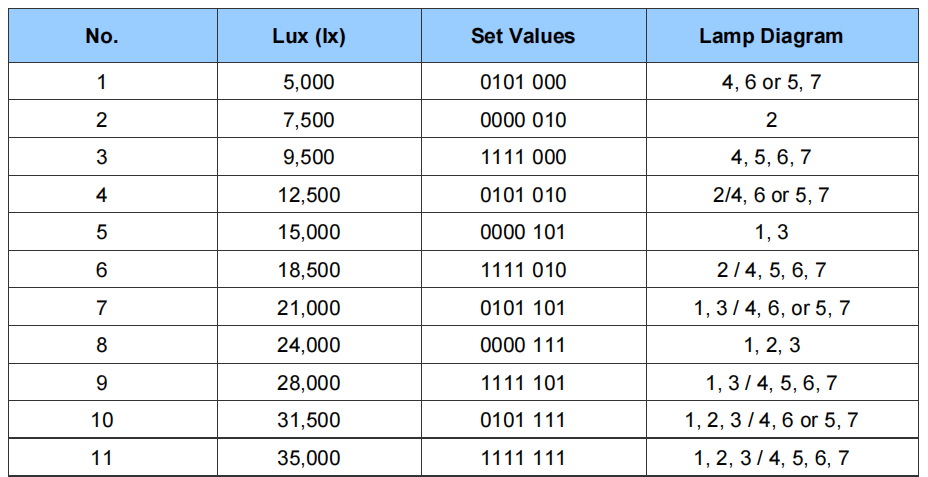 <br>
    </p>
    <h4>2.4 Vận hành chế độ thủ công</h4>
    <p>Vận hành thiết bị bằng cách ấn các nút “MODE” và “START” sau khi nhập các giá trị đã cài 
        đặt <br>
        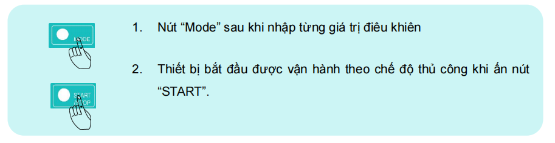 <br>
    </p>
    <h4>3. Example of performing manual mode</h4>
    <p>The discription shows how to perform in Manual modes.
        Please follow the orders as below <br>
        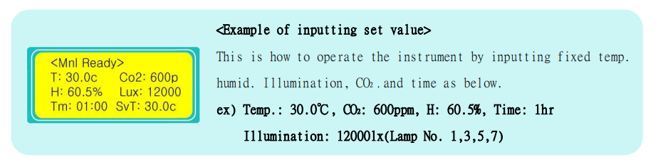 <br>
    </p>
    <h4>4. Chế độ vận hành theo chương trình</h4>
    <h4>4.1 Nhập các giá trị cho Chế độ chương trình</h4>   
    <p>Chế độ được thay đổi thành Chế độ chương trình cài đặt sau khi có tiếng bíp 
        bằng cách ấn nút <b> PROG / MANU  </b> trong 5 giây.
        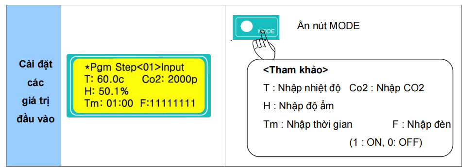 <br>
    </p>
    <h4>4.2 Cách cài đặt chương trình</h4>
    <p>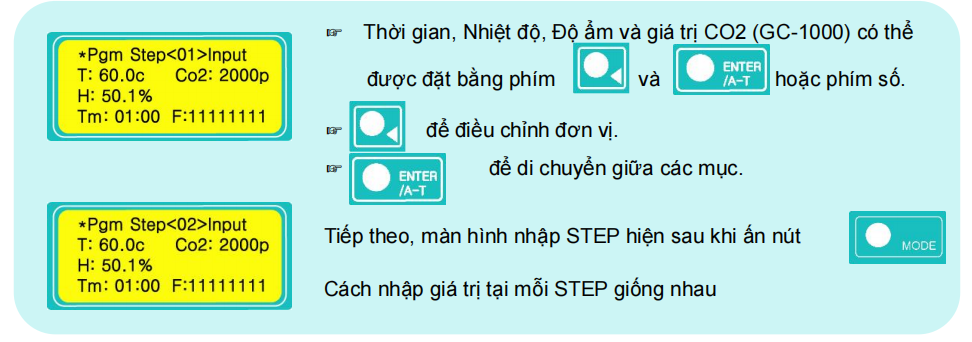 <br></p>
    <h4>4.3 Nhập và đóng STEP</h4>
    <p>Số STEP tối đa. của thiết bị là 10 ea. <br>
        Nếu thời gian được nhập là 00:00 tại BƯỚC 10, các bước trước BƯỚC 10 đều sẽ được nhập <br>
        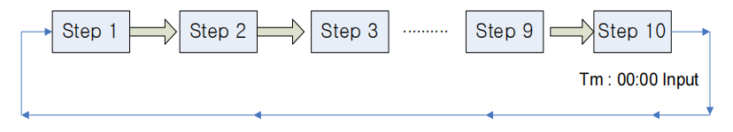 <br>
            Tổng 9 bước được nhập nếu thời gian được nhập là 00:00 ở BƯỚC 10 <br>
            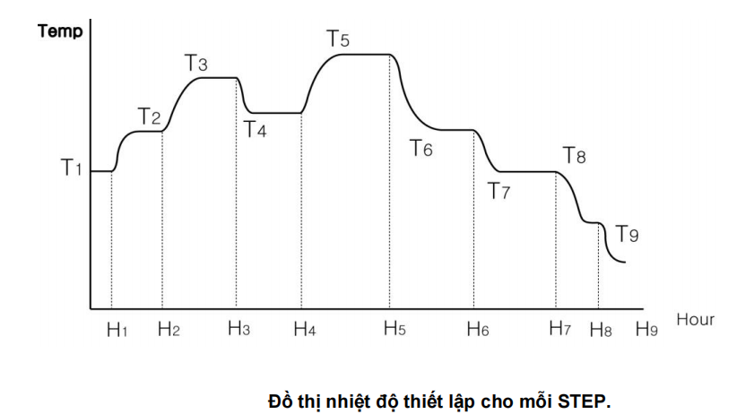 <br>
    </p>
    <h4>4.4 Nhập chỉ tiêu</h4> 
    <p> Ấn nút <b> MODE </b> sau khi ấn nút <b> STEP </b> <br>
        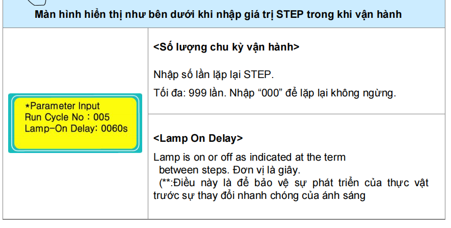 <br>
        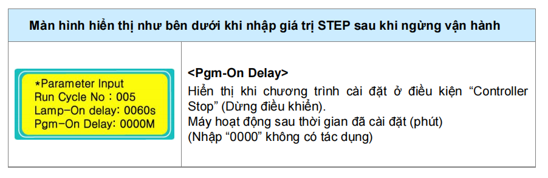 <br>
    </p>
    <h4>4.5 Vận hành chế độ chương trình cài đặt</h4>
    <p>
        1. Trong trường hợp nhập giá trị "STEP" trong khi hoạt động <br>
        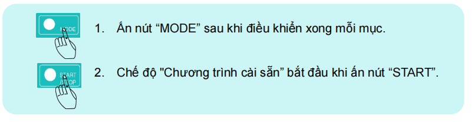 <br>
        2. Trong trường hợp nhập giá trị STEP sau khi dừng hoạt động <br>
         <br>
    </p>
    <h4>4.6 Ví dụ cài đặt đầu vào STEP của Chế độ chương trình cài sẵn</h4> 
    <p>If you want to repeat the step 60 times from 1 to 5 <br> 
        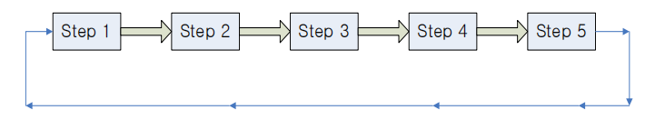 <br>
    </p>
    <h4>4.7 Chuyển “Operation STEP” ở chế độ Chương trình cài sẵn</h4>
    <p>
        Chức năng này dùng để thay đổi STEP hiện tại trong khi vận hành ở chế độ chương
trình cài sẵn <br> 
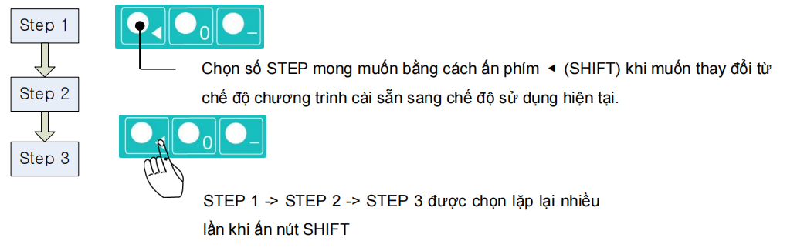 <br>
    </p>
    <h4> 5. Example of operating Program Mode</h4>
    <p>The discription shows how to perform in Program mode.
        Please follow the orders as below <br>
        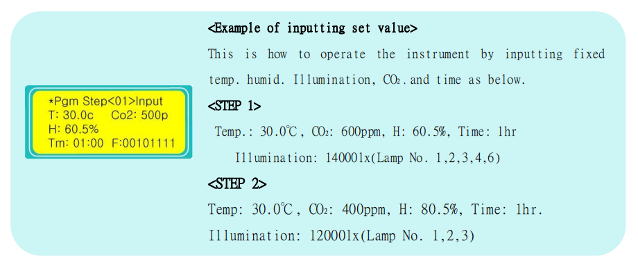 <br>
        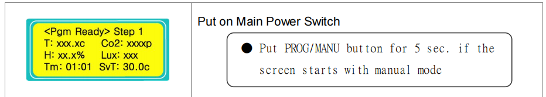 <br>
        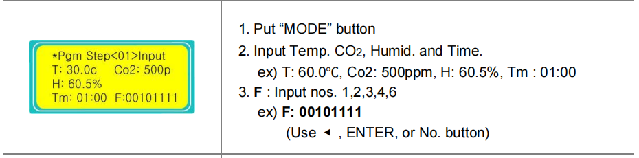 <br>
        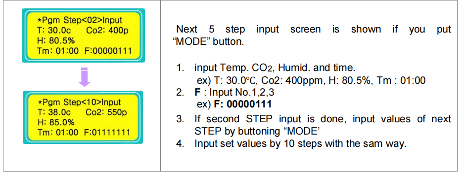 <br>
        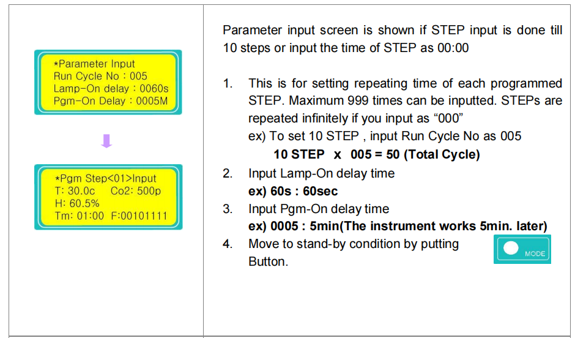 <br>
        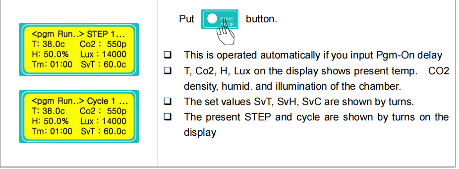 <br>
    </p>
    <h4>6. Vận hành và cài đặt hẹn giờ</h4>
    <h4>6.1 Lý thuyết hoạt động của bộ cài đặt thời gian</h4>
    <p>Bộ hẹn giờ hoạt động tự động theo giá trị đã cài đặt khi ấn nút “START” <br>
        1. Chức năng hẹn giờ hoạt động khi điều kiện đáp ứng một số trường hợp như dưới đây. <br>
         * Nếu nhiệt độ hiện tại thấp hơn giá trị cài đặt. (Giá trị cài đặt(Tm:) là 01:00) <br>
         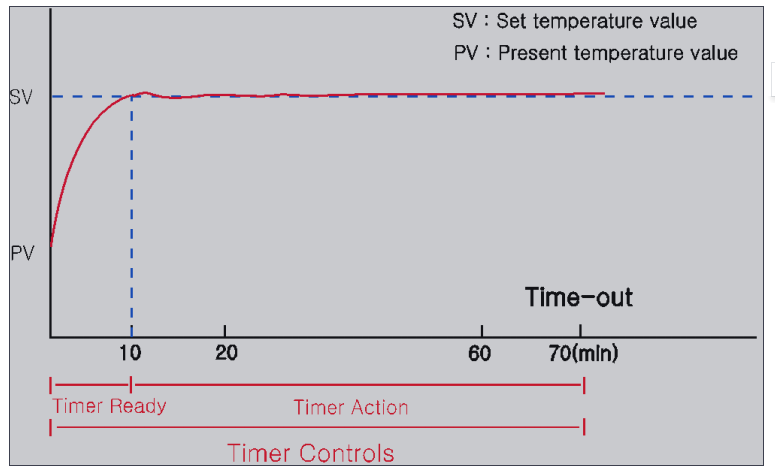 <br>
         * Nếu nhiệt độ hiện tại cao hơn giá trị cài đặt. (Giá trị cài đặt(Tm:) là 01:00) <br>
         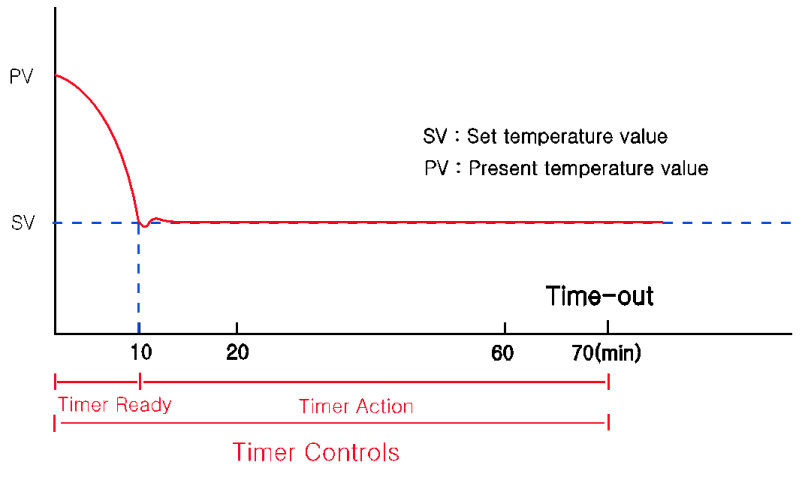 <br>
    </p>
    <h4>6.2 </h4>
    <p>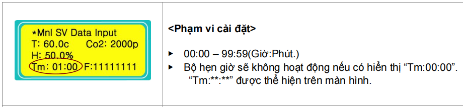 <br>
        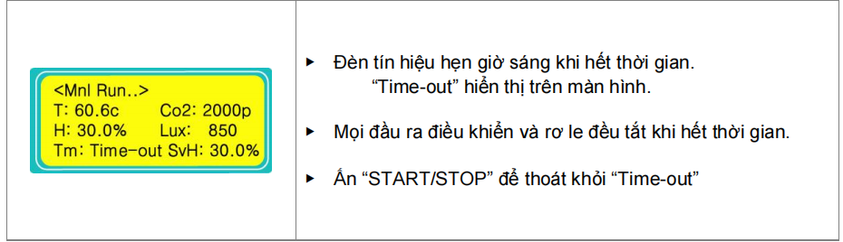 <br>
         <br>
    </p>
    <h4>7. Vận hành “AUTO TUNING”</h4>
    <h4>7.1 Khởi động “AUTO TUNING” </h4>
    <p>
        Ấn nút “AT” trong 5 giây ở điều kiện START, sau đó có thểchọn Autotuning <br>
        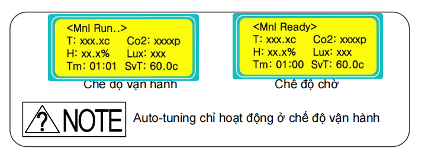 <br>
        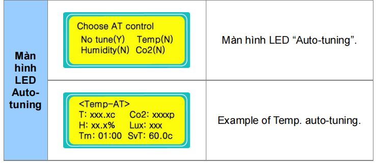 <br>
        1. Chọn mục điều khiển cho “Auto-tuning” bằng nút Enter. <br>
2. “Auto-tuning” được vận hành khi ấn nút “MODE” và đèn “Auto-tune”
nhấp nháy. <br>
Tình trạng của đèn tín hiệu <b> AUTO-TUNE </b>
    </p>
</body>
</html>